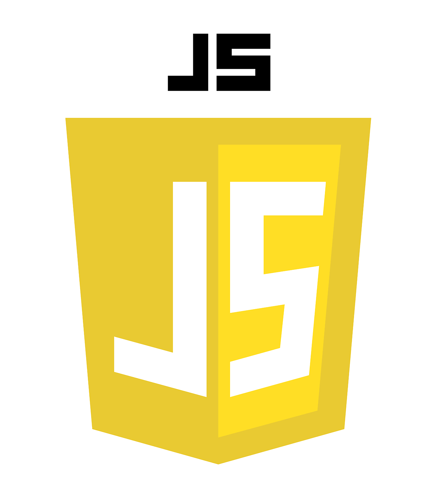

Hello, I'm Isaac Vazquez, an experienced programmer, designer, and web enthusiast dedicated to crafting exceptional user experiences. My passion for creativity and technology drives my work, ensuring innovative and user-friendly digital solutions.
As a programmer at Amazon, I'm part of a team driving innovation. I develop and improve software that powers Amazon's vast operations. My role involves crafting efficient solutions, leveraging cutting-edge tech, and contributing to an environment that values innovation and customer-centricity.
At Google, I was thrive as a programmer, diving into visionary projects that redefine possibilities. I'm involved in crafting software solutions that revolutionize user experiences. My work was the intersection of cutting-edge technology, data insights, and a culture that encourages boundless innovation. At Google, I'm part of a team shaping the future of tech, pushing the envelope of what's achievable in the digital realm.
At Spotify, I was immersed in a world where music meets technology. As a programmer, I contribute to creating seamless and personalized experiences for millions of users worldwide. My role was involved in innovating within a vibrant tech culture, developing solutions that resonate with music enthusiasts, and continuously refining how people enjoy their favorite tunes. At Spotify, I was part of a team that blends passion for music with cutting-edge tech, shaping the future of audio entertainment.
At Atlassian, I was a programmer contributing to empowering teams worldwide. My work involves building software solutions that streamline collaboration, productivity, and project management. I dive into a tech-driven environment, crafting tools that facilitate seamless workflows and foster innovation among teams. At Atlassian, I was part of a mission to revolutionize how teams work together, leveraging technology to create impactful and efficient solutions.
I'm currently immersed in the dynamic world of Computer Engineering studies. Delving into intricate algorithms, software development, hardware systems, and cutting-edge technologies, my journey involves exploring the core facets of computer science and engineering. I'm passionately acquiring knowledge to become proficient in creating innovative solutions that shape the future of technology. With a thirst for learning and a drive to innovate, I'm excited about the endless possibilities that lie ahead in this ever-evolving field.
In the realm of Web Applications, I'm diving into the dynamic world of creating interactive and user-centric online experiences. This field merges my passion for coding with a focus on designing and developing applications that operate seamlessly on the web. I'm learning to craft robust and intuitive interfaces, employing various programming languages and frameworks to build responsive and engaging web solutions. This journey into Web Applications fuels my curiosity to innovate and create digital experiences that resonate with users in today's interconnected world.
Studying Intermediate Vocational Training in Microinformatics and Networks opens doors to a world of digital systems and network administration. In this program, I'm gaining hands-on experience in managing and troubleshooting computer systems, honing skills in hardware, software, and network configuration. Through practical learning, I'm delving into the intricacies of maintaining and optimizing digital infrastructures, preparing to contribute to efficient network management and the smooth functioning of digital systems. This program fuels my passion for technology and equips me with the skills to thrive in the ever-evolving realm of IT and networking.
As a student in Compulsory Secondary Education (ESO), I'm engaging in a diverse and foundational educational journey. This stage allows me to explore a wide range of subjects, laying the groundwork for a well-rounded understanding of various disciplines. I'm delving into core subjects, fostering critical thinking, and acquiring fundamental knowledge that forms the basis for further academic pursuits. ESO is a pivotal stage where I'm honing essential skills, preparing to embrace higher education pathways and shape my academic and personal growth for the future.
Get us in touch